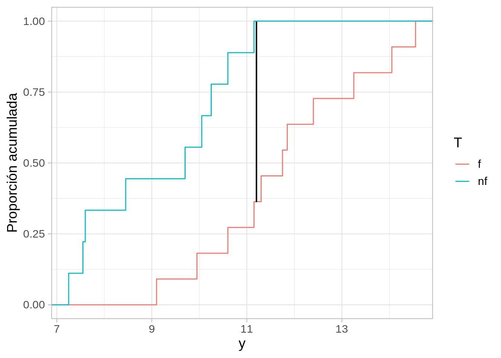
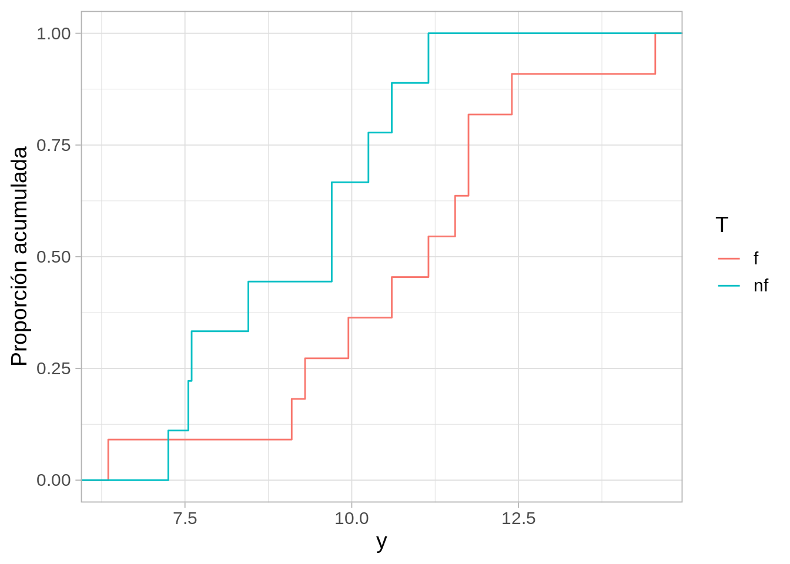

7 Aleatorización en inferencia causal
Empezaremos con ejemplos de inferencia causal y consideramos el ejemplo de (Box et al. (1978)).
Supongamos que un jardinero aficionado tiene un fertilizante, y quiere ver si tiene un efecto agregarlo a sus plantas. Nuestro jardinero solamente tiene una línea donde caben 20 plantas.
Cuando las plantas crezcan, observaremos variabilidad, independientemente de si se usa fertilizante o no. Esta variabilidad proviene de muchos factores ambientales, variaciones en las condiciones del suelo, insectos, etc. Interpretar los resultados correctamente implica necesariamente cuantificar esa variabilidad.
El jardinero escogió algunos lugares dónde poner el fertilizante y dónde no. El resultado que obtuvo es:
Código
res_obs <- tibble(planta = 1:20,
T = c("nf", "nf", "f", "f", "nf", "f", "f", "f", "nf", "nf", "f", "nf", "f", "f", "nf", "f", "f", "nf", "f", "nf"),
y = c(16.9, 19.4, 22.6, 23.7, 22.3, 26.5, 18.2, 19.9, 14.5, 15.1, 29.1, 15.2, 23.5, 24.8, 20.5, 21.2, 22.3, 20.1, 28.1, 21.2) / 2) |>
mutate(y_nf = ifelse(T == "nf", y, NA),
y_f = ifelse(T == "f", y, NA))
res_obs |> select(planta, T, y) |> kable() |>
kable_paper(full_width = FALSE)| planta | T | y |
|---|---|---|
| 1 | nf | 8.45 |
| 2 | nf | 9.70 |
| 3 | f | 11.30 |
| 4 | f | 11.85 |
| 5 | nf | 11.15 |
| 6 | f | 13.25 |
| 7 | f | 9.10 |
| 8 | f | 9.95 |
| 9 | nf | 7.25 |
| 10 | nf | 7.55 |
| 11 | f | 14.55 |
| 12 | nf | 7.60 |
| 13 | f | 11.75 |
| 14 | f | 12.40 |
| 15 | nf | 10.25 |
| 16 | f | 10.60 |
| 17 | f | 11.15 |
| 18 | nf | 10.05 |
| 19 | f | 14.05 |
| 20 | nf | 10.60 |
Para decidir qué tan bueno es el nuevo fertilizante, el jardinero decide usar la siguiente estadística \(D\) (Kolmogorov-Smirnov):
- Calculamos la fda empírica para los datos con fertilizante y los que no tienen fertilizante
- Calculamos la diferencia máxima entre estas dos curvas.
Un valor de \(D\) grande sugiere que el fertilizante tiene algún efecto. En nuestro experimento, obtuvimos:
Código
ggplot(res_obs, aes(y, colour = T)) +
stat_ecdf() +
geom_segment(x = 11.2, xend = 11.2, y = 0.362, yend = 0.636+0.362, colour = "black") +
ylab("Proporción acumulada")
La diferencia más grande en estas curvas es:
Código
ks_est_2 <- function(datos, grupo){
sep_tbl <- group_split(datos, {{ grupo }})
invisible(ks.test(sep_tbl[[1]]$y, sep_tbl[[2]]$y))$statistic
}
resumen <- res_obs |>
summarise(D = ks_est_2(res_obs, T))
resumen# A tibble: 1 × 1
D
<dbl>
1 0.636Parece ser que las plantas con fertilizante tuvieron mejores resultados (la distribución de las fertilizadas está recorrida hacia la derecha). El problema aquí es que las plantas tienen variabilidad, y la diferencia que observamos, que no es muy grande, podría deberse a esa variabilidad, y no tener qué ver con el fertilizante.
¿Cómo juzgamos si este resultado puede atribuirse a variabilidad en el crecimiento de cada planta?
Reescribimos nuestros datos como:
Código
res_obs |> kable() |>
kable_paper(full_width = FALSE)| planta | T | y | y_nf | y_f |
|---|---|---|---|---|
| 1 | nf | 8.45 | 8.45 | NA |
| 2 | nf | 9.70 | 9.70 | NA |
| 3 | f | 11.30 | NA | 11.30 |
| 4 | f | 11.85 | NA | 11.85 |
| 5 | nf | 11.15 | 11.15 | NA |
| 6 | f | 13.25 | NA | 13.25 |
| 7 | f | 9.10 | NA | 9.10 |
| 8 | f | 9.95 | NA | 9.95 |
| 9 | nf | 7.25 | 7.25 | NA |
| 10 | nf | 7.55 | 7.55 | NA |
| 11 | f | 14.55 | NA | 14.55 |
| 12 | nf | 7.60 | 7.60 | NA |
| 13 | f | 11.75 | NA | 11.75 |
| 14 | f | 12.40 | NA | 12.40 |
| 15 | nf | 10.25 | 10.25 | NA |
| 16 | f | 10.60 | NA | 10.60 |
| 17 | f | 11.15 | NA | 11.15 |
| 18 | nf | 10.05 | 10.05 | NA |
| 19 | f | 14.05 | NA | 14.05 |
| 20 | nf | 10.60 | 10.60 | NA |
Nótese que escribimos en cada caso el dato observado y el no observado.
Ahora supongamos que el tratamiento no tiene ningún efecto sobre el crecimiento de las plantas. Bajo esta hipótesis, podemos rellenar los valores no observados: en cada caso, el dato faltante lo conocemos, y es igual al valor observado para cada planta.
Código
bajo_nula <- res_obs |>
mutate(y_f = y, y_nf = y)
bajo_nula |> kable() |>
kable_paper(full_width = FALSE)| planta | T | y | y_nf | y_f |
|---|---|---|---|---|
| 1 | nf | 8.45 | 8.45 | 8.45 |
| 2 | nf | 9.70 | 9.70 | 9.70 |
| 3 | f | 11.30 | 11.30 | 11.30 |
| 4 | f | 11.85 | 11.85 | 11.85 |
| 5 | nf | 11.15 | 11.15 | 11.15 |
| 6 | f | 13.25 | 13.25 | 13.25 |
| 7 | f | 9.10 | 9.10 | 9.10 |
| 8 | f | 9.95 | 9.95 | 9.95 |
| 9 | nf | 7.25 | 7.25 | 7.25 |
| 10 | nf | 7.55 | 7.55 | 7.55 |
| 11 | f | 14.55 | 14.55 | 14.55 |
| 12 | nf | 7.60 | 7.60 | 7.60 |
| 13 | f | 11.75 | 11.75 | 11.75 |
| 14 | f | 12.40 | 12.40 | 12.40 |
| 15 | nf | 10.25 | 10.25 | 10.25 |
| 16 | f | 10.60 | 10.60 | 10.60 |
| 17 | f | 11.15 | 11.15 | 11.15 |
| 18 | nf | 10.05 | 10.05 | 10.05 |
| 19 | f | 14.05 | 14.05 | 14.05 |
| 20 | nf | 10.60 | 10.60 | 10.60 |
Bajo esta hipótesis, podemos calcular qué pasaría si hubiéramos escogido distintas plantas para el tratamiento de fertilizante.
Simplemente consideramos todas las permutaciones de la columna \(T\), y vemos el valor que tiene nuestra estadística \(D\) en cada caso. La distribución resultante es la distribución de referencia bajo la hipótesis de que el fertilizante no tiene efecto, y muestra la variabilidad de nuestra estadística bajo esta hipótesis.
Usualmente, en lugar de calcular todas las permutaciones, simulamos un número grande de ellas (de mil a 10 mil, por ejemplo). Abajo mostramos dos ejemplos:
Código
permutar_est <- function(datos_tbl){
datos_perm_tbl <- datos_tbl |>
mutate(T = sample(T, size = length(T))) |>
mutate(y_obs = ifelse(T == "f", y_f, y_nf))
datos_perm_tbl |>
summarise(D = ks_est_2(datos_perm_tbl, T))
}
permutar_est_datos <- function(datos_tbl){
datos_perm_tbl <- datos_tbl |>
mutate(T = sample(T, size = length(T))) |>
mutate(y_obs = ifelse(T == "f", y_f, y_nf))
datos_perm_tbl
}
set.seed(112)
permutar_est(bajo_nula)# A tibble: 1 × 1
D
<dbl>
1 0.323Código
permutar_est(bajo_nula)# A tibble: 1 × 1
D
<dbl>
1 0.364Código
perms_dist <- map_df(1:1000, function(i){
permutar_est(bajo_nula) |>
mutate(rep = i)
})Código
ggplot(perms_dist, aes(sample = D)) +
geom_qq(distribution = qunif) +
geom_hline(yintercept = resumen$D, colour = "red") +
xlab("f") + ylab("valor de D") +
labs(subtitle = "Distribución nula de referencia") +
annotate("text", x = 0.1 , y = 0.7, label = "Valor observado", colour = "red")
Y aquí vemos todos los posibles resultados bajo distintas asignaciones del fertilizante, bajo la hipótesis del que el fertilizante no tiene ningún efecto. Adicionalmente, marcamos el valor que observamos en el experimento.
Como vemos, el resultado que obtuvimos está en el lado alto de la destribución. Parece ser que el fertilizante tiene algún efecto.
Sin embargo, hay un hueco en nuestro argumento. Por ejemplo,
- ¿Qué pasaría si el jardinero decidió poner el fertilizante en plantas más grandes o que se veían más fuertes para “aprovechar mejor el fertilizante”?
- ¿Qué pasaría si el jardinero decidió poner el fertilizante a las plantas que reciben menos horas de sol para “ayudarles”?
Si esto es cierto, entonces nuestro argumento no es válido. Quizá la diferencia es grande porque el fertilizante se aplicó a plantas con más potencial desde un principio.
Una solución simple es la siguiente:
- Supongamos que le recomendamos al jardinero al principio escoger al azar una asignación del tratamiento.
- En ese caso, la probabilidad de haber escogido esa configuración particular con una estadística tan alta (o uno más grande) bajo la hipótesis de que el fertilizante no tiene efecto es
Código
mean(perms_dist$D >= resumen$D)[1] 0.009- Es poco probable entonces que este resultado tan alto haya ocurrido al azar en el momento de escoger tratamientos.
Llamamos a este valor-p de la prueba, y cuanto más chico es, mayor evidencia tenemos contra la hipótesis nula.
Este valor es bajo, y da evidencia de que el fertilizante ayuda a las plantas. Hay una probabilidad baja de que por azar el jardinero haya escogido una asignación que produce una diferencia tan grande si el fertilizante no ayuda.
Este argumento no funciona si el jardinero intentó “optimizar” la aplicación del fertilizante. En ese caso, quizá activamente buscó una configuración que favorece al fertilizante.
Esta prueba es exacta, en el sentido de que el valor-p que calculamos refleja correctamente la probabilidad de obtener un resultado tan grande o mayor del que observamos si la hipótesis nula es cierta.
Finalmente, nótese también que hicimos un supuesto adicional, que es que la asignación de tratamientos no influye en los dos resultados (observado y contrafactual). Por ejemplo, que haya asignado el tratamiento A o B a una unidad no afecta el resultado de otra unidad. Comunicación o asociación social entre personas puede romper este supuesto.
7.1 Pruebas de hipótesis visuales
Otra idea es hacer una prueba visual (ver por ejemplo (este artículo)[https://vita.had.co.nz/papers/inference-infovis.pdf]. Primero graficamos varias replicaciones de datos nulos, es decir, datos en donde hemos permutado al azar la columna de tratamiento. Entrenamos nuestra percepción a variaciones consistentes con la hipótesis nula:
Código
library(nullabor)
set.seed(83814)
# comenzamos con rorsach, viendo datos nulos
reps_rorschach <- rorschach(method = null_permute("T"), n = 20, res_obs) |>
as_tibble()
ggplot(reps_rorschach, aes(sample = y, colour = T, group = T)) +
stat_qq(distribution = stats::qunif) +
stat_qq_line(distribution = stats::qunif, fullrange = TRUE) +
facet_wrap(~ .sample) + theme(strip.background =element_rect(fill="gray85"))Y ahora hacemos nuestra prueba. En la siguiente gráfica 19 cajas tienen datos nulos, y una caja tiene los datos verdaderos.
¿Puedes identificar los datos verdaderos?
Código
reps <- lineup(method = null_permute("T"), n = 20, res_obs) |>
as_tibble()decrypt("3er5 ynUn 7L tzx7U7zL cE")Código
ggplot(reps, aes(sample = y, colour = T, group = T)) +
stat_qq(distribution = stats::qunif) +
stat_qq_line(distribution = stats::qunif, fullrange = TRUE) +
facet_wrap(~ .sample) + theme(strip.background =element_rect(fill="gray85"))- Esta prueba es exacta: la probabilidad de identificar los datos correctamente cuando el fertilizante no tiene efecto es menor o igual a 0.05 (valor \(p\)). Esta es la probabilidad de equivocadamente declarar que tenemos evidencia de que la hipótesis nula no se cumple.
7.2 Ejemplo: poca evidencia en contra de la nula
Como segundo ejemplo, imaginemos que hubiéramos obtenido los siguientes datos:
Código
res_obs <- tibble(planta = 1:20,
T = c("nf", "nf", "f", "f", "nf", "f", "f", "f", "nf", "nf", "f", "nf", "f", "f", "nf", "f", "f", "nf", "f", "nf"),
y = c(16.9, 19.4, 18.6, 12.7, 22.3, 23.5, 18.2, 19.9, 14.5, 15.1, 29.1, 15.2, 23.5, 24.8, 20.5, 21.2, 22.3, 19.4, 23.1, 21.2) / 2) |>
mutate(y_nf = ifelse(T == "nf", y, NA),
y_f = ifelse(T == "f", y, NA))
bajo_nula <- res_obs |>
mutate(y_f = y, y_nf = y)
res_obs |> select(planta, T, y) |> kable() |>
kable_paper(full_width = FALSE)| planta | T | y |
|---|---|---|
| 1 | nf | 8.45 |
| 2 | nf | 9.70 |
| 3 | f | 9.30 |
| 4 | f | 6.35 |
| 5 | nf | 11.15 |
| 6 | f | 11.75 |
| 7 | f | 9.10 |
| 8 | f | 9.95 |
| 9 | nf | 7.25 |
| 10 | nf | 7.55 |
| 11 | f | 14.55 |
| 12 | nf | 7.60 |
| 13 | f | 11.75 |
| 14 | f | 12.40 |
| 15 | nf | 10.25 |
| 16 | f | 10.60 |
| 17 | f | 11.15 |
| 18 | nf | 9.70 |
| 19 | f | 11.55 |
| 20 | nf | 10.60 |
Código
ggplot(res_obs, aes(y, colour = T)) +
stat_ecdf() +
ylab("Proporción acumulada")
Código
resumen <- res_obs |>
summarise(D = ks_est_2(res_obs, T))
perms_dist <- map_df(1:1000, function(i){
permutar_est(bajo_nula) |>
mutate(rep = i)
})
ggplot(perms_dist, aes(sample = D)) +
geom_qq(distribution = qunif) +
geom_hline(yintercept = resumen$D, colour = "red") +
xlab("f") + ylab("valor de D") +
labs(subtitle = "Distribución nula de referencia") +
annotate("text", x = 0.1 , y = 0.5, label = "Valor observado", colour = "red")Código
mean(perms_dist$D >= resumen$D)[1] 0.144Este valor \(p\) es alto, y no es muy difícil que, bajo la hipótesis de que el tratamiento no tiene efecto, por azar el jardinero haya escogido una asignación con el valor observado de la estadística de prueba. En este caso, creemos que los datos son consistentes con la hipótesis nula.
Ejemplo: tiempos de fusión
Podemos utilizar la prueba de permutaciones con otras estadísticas de prueba (ver nota al final de estos ejemplos) como medias o medianas.
En el siguiente ejemplo (Cleveland (1993)), investigadores se preguntaron si es posible que las personas reconozcan más fácilmente la imagen escondida en un estereograma si se les da información verbal acerca de la imagen que tienen que encontrar.
La medición que consideraron el el tiempo de fusión en segundo, es decir, cuánto tarda la persona en ver la imagen 3D escondida. Naturalmente, existe mucha variación en el tiempo que tardan las personas en reconocer esas imágenes (algunos lo hacen casi instantáneamente y otros pueden tardar hasta minutos).
Este experimento se diseño aleatorizando el tratamiento entre los participantes del estudio, que son voluntarios, de forma que si encontramos evidencia de diferencias entre los dos grupos, tenemos evidencia de que el tratamiento cambia el tiempo de fusión entre los partipantes.
Podemos hacer una prueba de permutaciones para la diferencia de las medias y otras estadísticas como la mediana o promedio del cuartiles superior e inferior (son versiones menos dependientes de datos atípticos), por ejemplo. En este ejemplo usaremos la diferencia de medias:
Código
fusion <- read_table("./datos/fusion_time.txt")
# estadística de prueba
stat_fusion <- function(x){
mean(x)
#(quantile(x, 0.75) + quantile(x, 0.25))/2
}
# calcular para cada grupo la estadística
calc_fusion <- function(stat_fusion){
fun <- function(datos){
datos |>
group_by(nv.vv) |>
summarise(est = stat_fusion(time)) |>
spread(nv.vv, est) |> mutate(dif = VV - NV ) |> pull(dif)
}
fun
}
# esta función hace permutaciones y calcula la diferencia para cada una
permutaciones_est <- function(datos, variable, calc_diferencia, n = 1000){
# calcular estadística para cada grupo
permutar <- function(variable){
sample(variable, length(variable))
}
tbl_perms <- tibble(.sample = seq(1, n-1, 1)) |>
mutate(diferencia = map_dbl(.sample,
~ datos |> mutate({{variable}}:= permutar({{variable}})) |> calc_diferencia()))
bind_rows(tbl_perms, tibble(.sample = n, diferencia = calc_diferencia(datos)))
}Código
calc_cociente <- calc_fusion(stat_fusion)
dif_obs <- calc_cociente(fusion)
# permutar
valores_ref <- permutaciones_est(fusion, nv.vv, calc_cociente, n = 10000)
dist_perm_nv <- ecdf(valores_ref$diferencia)
cuantil_obs <- dist_perm_nv(dif_obs)La observación es algo extrema, de manera que tenemos evidencia de que la información verbal ayuda. Para cuantificar esta evidencia, calcularemos el valor-p correspondiente
Valor p
Usualmente preferimos usar un valor \(p\) de dos colas para cuantificar la evidencia contra la nula. Esto es porque podría ser que la diferencia fuera muy grande o muy positiva, y en ambos casos diríamos que los datos no son consistentes con la nula.
Si la hipótesis nula es cierta, ¿cuál es la probabilidad de observar una diferencia tan extrema o más extrema de lo que observamos? Esto incluye valores muy grandes o muy chicos.
El estándar usual para pruebas de hipótesis es hacer utilizar el valor-\(p\) de dos colas.
Considerando en este caso interpretamos extrema como que cae lejos de donde a mayoría de la distribución se concentra, podemos calcular el valor p como sigue. A partir de el valor observado, consideramos cuál dato es menor: la probabilidad bajo lo hipótesis nula de observar una diferencia mayor de a que observamos, o la probabilidad de observar una diferencia menor a la que observamos. Tomamos el mínimo y multiplicamos por dos (Hesterberg (2015)):
Código
dist_perm_nv <- ecdf(valores_ref$diferencia)
2 * min(dist_perm_nv(dif_obs), 1- dist_perm_nv(dif_obs))[1] 0.0412Lo que muestra evidencia considerable, aunque no muy fuerte, de que la instrucción verbal ayuda a reducir el tiempo de fusión de los estereogramas. Los grupos gráficados se ven como sigue:
Código
ggplot(fusion, aes(x = nv.vv, y = time)) +
geom_boxplot() + coord_flip()Otros tipos de hipótesis nulas
Las pruebas de permutaciones no están tan perfectamente adaptadas a este problema, pues prueban todos los aspectos de las distribuciones que se comparan, aún cuando escogamos una estadística particular que pretende medir, por ejemplo, diferencia de medias. Eso quiere decir que podemos rechazar igualdad de medias, por ejemplo, cuando en realidad otra característica de las distribuciones es la que difiere mucho en las poblaciones
En algunas referencias (ver Chihara, Efron y Tibshirani (1993)) se argumenta que de todas formas las pruebas de permutaciones son relativamente robustas a esta desadaptación. Un caso excepcional, por ejemplo, es cuando las poblaciones que comparamos resultan tener dispersión extremadamente distinta, y adicionalmente los tamaños de muestra de los grupos son muy desiguales (otra vez, ver ejemplos en Chihara y Hesterberg (2018)).